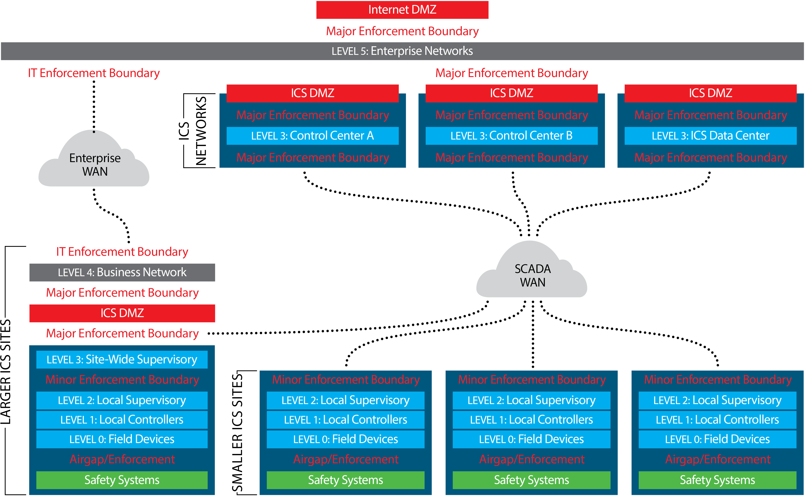
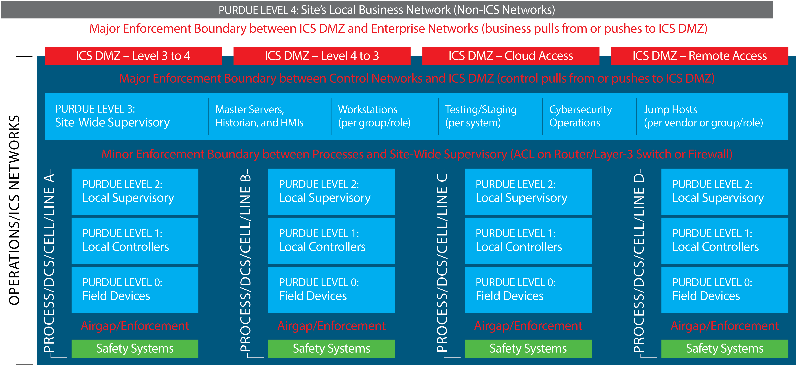

OT reference architectures and sensor placement
Two SANS ICS410 reference models help answer where supervisory systems run and where the SOC can obtain evidence. The diagrams show reference architecture, not an as-built network. Sensor and log placements below are proposed catalog guidance.
1. Distributed SCADA over a wide area
Separate enterprise and SCADA WANs connect business and control functions. Level 3 control centers and the ICS data center serve distributed sites. Larger sites can have site-wide supervision; smaller sites may start with local supervision at Level 2.

SANS ICS410 reference model for SCADA over a large geographic area. Published reference, Figure 11. Select the diagram to open it at full size.
- Passive network visibility
- Mirror approved links on the OT side of control-center WAN boundaries. Add passive capture at selected remote sites where station-local traffic never reaches the WAN. Validate both normal and failover paths where present.
- Logs and product feeds
- Collect SCADA master application audit, operator authentication, WAN firewall and router events, and ICS DMZ access records. Add supported station logs and OT monitoring alerts, inventory and sensor health. Buffer at the site when approved and supported for intermittent links.
- What to validate
- Trace a known control-center session to the intended station. Verify that a local station exchange is visible at the edge and that missing station telemetry raises a collection health alert.
2. Plant with site-wide supervision and multiple cells
Level 3 hosts shared supervisory services such as master servers, historians and site-wide HMIs. Level 2 serves a process, DCS, cell or line. The diagram distinguishes DMZ paths for OT-to-business data, business-to-OT data, cloud access and remote access.

SANS ICS410 plant reference architecture, supplied diagram. See SANS guidance on Purdue levels and enforcement boundaries. Select the diagram to open it at full size.
- Passive network visibility
- Observe traffic crossing the Level 3-to-cell boundary and add Level 2 capture for critical traffic that stays within a cell. Select TAP or SPAN points based on actual SCADA-to-controller paths and check capture loss.
- Logs and product feeds
- Collect DMZ firewall, Zero Trust, broker and jump-host logs. Collect Level 3 SCADA, historian, engineering workstation and jump-host audit where present. For local Level 2 supervision and OEM devices, use supported application or device export; ingest OT monitoring alerts, inventory and health where available.
- What to validate
- Trace a known approved remote session from the DMZ to its OT target, then correlate the application audit and available passive observations. Check that cell-local activity is visible even when the Level 3 sensor sees no matching flow.
Coverage validation for both models
- Place SCADA by scope and actual deployment. A cell-local supervisory server can sit at Level 2; a site-wide or regional master can sit at Level 3. Collect its audit logs in the deployed zone and capture its controller communications where they traverse the network.
- Preserve boundaries. Separate passive capture interfaces from management and export. Forward through approved zone collectors and DMZ paths; do not assume access to safety networks or add a route across a safety boundary for monitoring.
- Resolve assets by site and zone. Correlate passive observations, product inventory and the approved asset register with stable identifiers where available. Track conflicts and blind spots; do not merge on IP alone.
- Validate detection and telemetry health. Start with known behaviors and approved-path rules. Evaluate anomaly baselines against operating modes and use supervised models only with suitable labeled evidence. Track source status, parsing, clock quality, packet loss and collection outages.
Use the catalog by log source to map these collection points to detections, and the production roadmap to record rollout gaps.